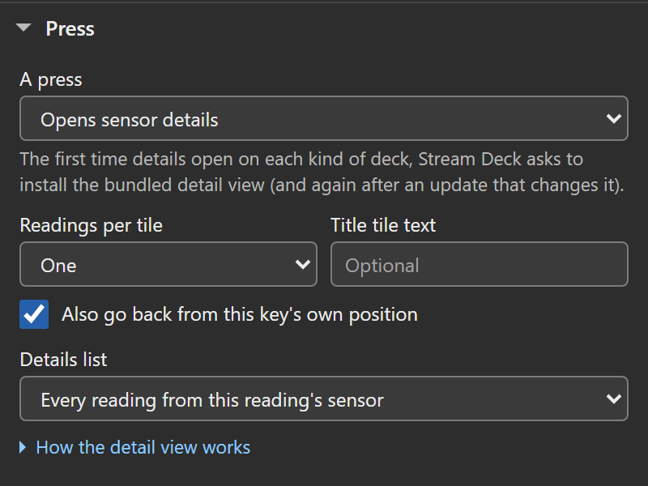
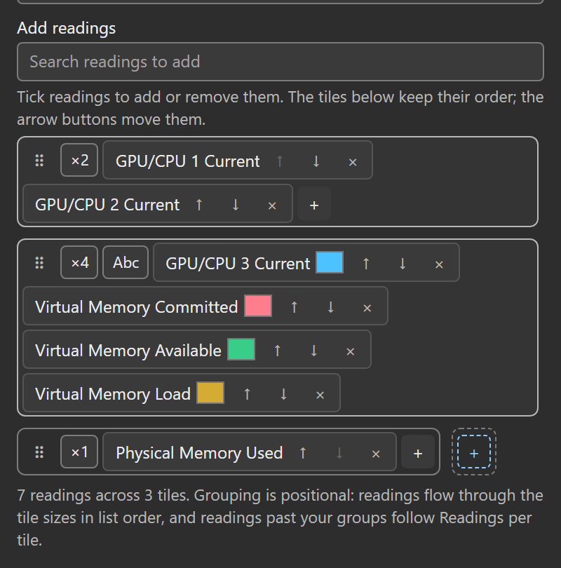
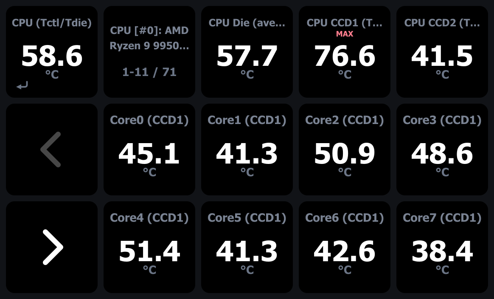
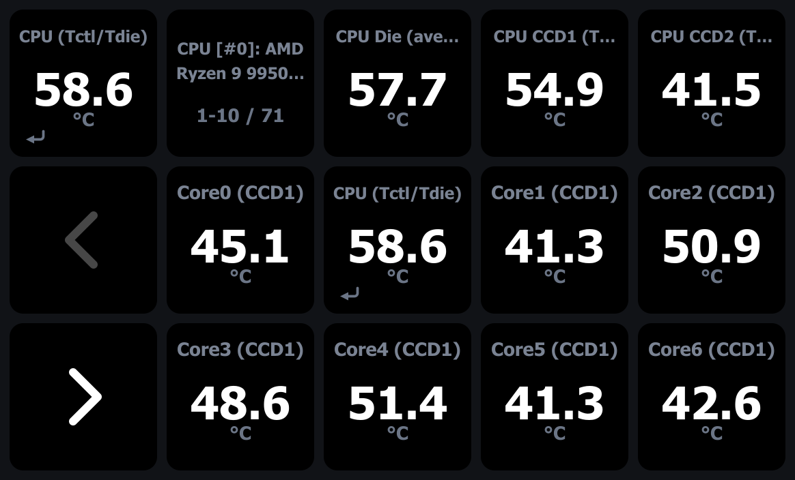
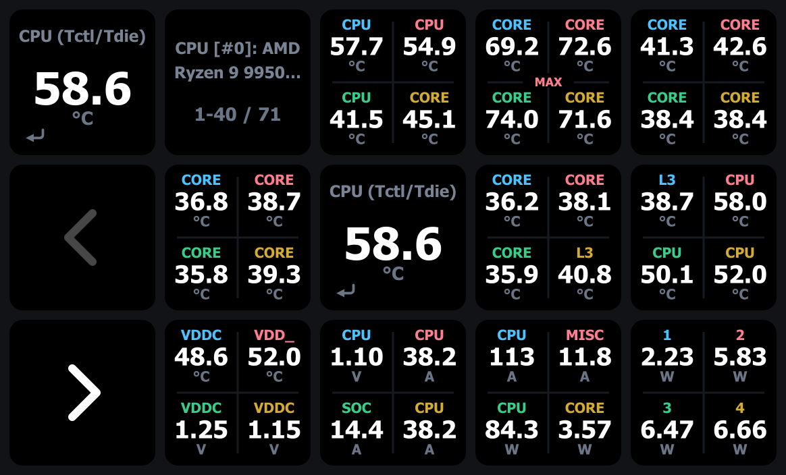
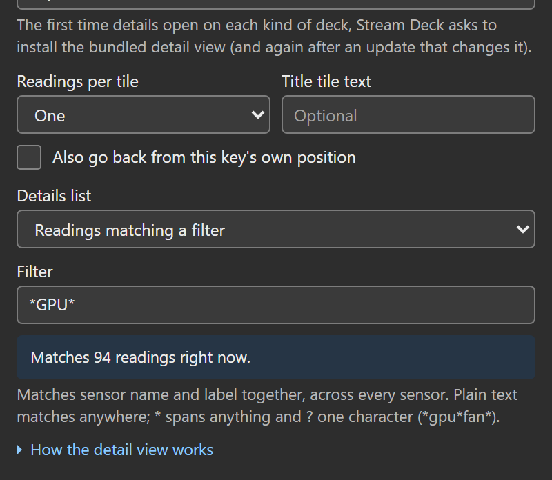

A Sensor Reading key can open a full page of related readings: press the CPU temperature key and the deck switches to a detail view listing every reading of that CPU sensor, with the key you pressed staying live as the Back tile. This is the drill-down asked for in issue #5.
What it is (and is not)
The detail view is a plugin-managed profile, not a native Stream Deck folder. The Stream Deck SDK does not let a plugin place keys inside a user’s folders or profiles, so the plugin ships one editable, one-page profile per supported deck type (“HWiNFO Details” in the app’s profile list) and switches to it on demand. Pressing Back asks the Stream Deck app to return to the profile you came from.
Practical consequences:
- The first time you open details on a deck, the Stream Deck app asks to install that deck’s detail profile. Accept once; later entries switch silently.
- The page is a normal, editable profile, but it ships with every cell already filled: reading tiles, the Back tile, the title and the pagers. Adding a key of your own means replacing one of those, not filling a gap. The plugin never repairs or overwrites what you change. The shipped page holds no data of yours: every tile asks the plugin what to show at runtime.
- What you change on that page is shared. There is one detail page per deck type, so a key you add, or a tile you replace, appears on every drill-down you open on that deck no matter which key you pressed. What still follows the key you pressed is the live content: the reading tiles, the title, the pager range and, until you pick a sensor for it, the Back tile’s face.
- To get the shipped page back, delete the profile under Preferences, Profiles in the Stream Deck app, then open a drill-down again and accept the install. There is no reset inside the plugin, because a plugin cannot edit or repair a profile you already have installed.
- If what you want is a page you lay out yourself, with your own multi-reading keys on it, make a Stream Deck folder instead: right-click a key in the Stream Deck app and choose Create Folder. That is the app’s own feature, not this plugin’s, and unlike the detail page it belongs to that one key. The trade is that a folder’s opener key shows a static icon, while a drill-down key shows a live reading.
- The Stream Deck app never updates a profile that is already installed. When a plugin update changes the page itself, it ships as a new profile revision under a new internal identity, the next drill-down asks once to install it, and the previously installed copy stays untouched in your profile list. Upgrading from a preview works that way, but the release name is “HWiNFO Details” again: remove the preview’s detail profiles first, or the new one installs alongside them as “HWiNFO Details copy”.
- Back returns you to the profile you came from. After a full Stream Deck app restart the app’s own notion of “previous profile” resets, so where Back lands then (or whether it moves at all) is the app’s restore behavior, not stored state in this plugin; if it does nothing, switch profiles from the Stream Deck app once and re-enter.
Turning it on
In the key’s settings panel, open Press (its folded title line summarizes the choice, e.g. Press opens details: custom list of 7). The controls below appear in the panel’s order:
- A press picks the behavior. The default, Cycles current, min, max, avg, keeps the stat cycle. Opens sensor details switches to the detail view on press. Tap cycles; hold opens details keeps the cycle on a short tap and opens details after holding half a second. Either details choice shows the rest of this list and a note that the first time details open on each kind of deck, Stream Deck asks to install the bundled detail view.
- Readings per tile packs two, three or four readings onto each tile of the view, using the same stacked, row and quad faces regular keys have. One stays the default and keeps the page exactly as it was. A dense tile shows one shared stat badge, a press cycles all of its readings together, and a page’s last tile simply carries however many readings remain. In the four-per-tile grid each cell shows a short label built from its reading’s name with the words all four share dropped, so four GPU readings read MEMO, HOT, THER and CORE instead of GPU four times over, and Core 0 to Core 3 VID read 0, 1, 2, 3.
- Title tile text names the view’s title tile in any mode, replacing the default (the sensor name, the filter pattern, or Custom set).
- Also go back from this key’s own position keeps the second Back tile described below, on by default; untick it and the movable top-left Back is the one way out.
- Details list picks the list. Every reading from this reading’s sensor (the default) lists every other reading HWiNFO currently publishes for the pressed reading’s sensor, in HWiNFO’s order; the pressed reading itself rides on the Back tile and is not repeated in the list or the title’s count. A custom list lists exactly the readings you add (search under Add readings and tick them), in the order you set (the opener’s own reading stays on the Back tile). Readings matching a filter lists everything whose sensor name and label, taken together, match a glob pattern (the Filter field), across every sensor and live:
*4090*gathers every reading of an RTX 4090,*gpu*fan*just its fans, and the list re-resolves each poll so readings that appear or vanish in HWiNFO follow along. The pattern doubles as the title unless you set one, the panel shows a live match count under the field, and the grammar gets its own section below. - A custom list can group its tiles one by one. Each entry in the list grows a small tile control: click the size to cycle a tile through one, two, three or four readings, give any cell its own label, and give a quad tile’s cells their own colors or switch it to bare color-coded values, the same knobs a regular key of that size has. Mixed sizes sit together on one page, readings past your groups keep flowing at the Readings per tile setting, and the grouping is positional: readings flow through the tile pattern in list order. The arrows, and a drag within one tile, reorder the readings through a pattern that stays put. Dragging a chip onto a different tile moves the reading there instead, so the tile it left loses a cell and the tile it landed on gains one. Wherever on a tile you let go, the chip lands where the blue caret sits, at the cell edge nearest your pointer; a tile already holding four readings cannot take a fifth, so the caret moves to that tile’s own edge and the chip parks beside it as a tile of its own. A reading’s label and colors travel with it every one of those ways. That covers the colors a four-cell tile hands out by default as well as the ones you pick yourself, so moving a reading never repaints the ones it moves past. Two readings can end up the same color that way, since each keeps the color it already had; click either cell’s color well to tell them apart again. Removing a reading shrinks the tile that held it instead of pulling the next reading up into it, whether you grouped that tile by hand or the Readings per tile fill built it, so the tiles below keep their readings and the freed cell refills from the tile’s plus; a fill tile shrunk this way joins your groups at its new size, the same freeze touching its size control applies. Sensor and filter lists re-resolve live against HWiNFO and cannot pin tiles positionally, so grouping is a custom-list feature by design.

Choosing the list
Every reading from this reading’s sensor lists that sensor’s other published readings in HWiNFO’s order. The opener’s reading appears on Back and is excluded from the list and its count.
A custom list uses the readings and order you choose. It also supports individual tile sizes, labels and colors. The list shows one tile per measurement: two saved keys that resolve to the same reading through a confirmed source link or a legacy Gadget alias share one tile, and a key that resolves to the opener’s own reading is left to the Back tile.
Since 1.7.1, when a confirmed link or a new Reading pick makes a listed key the opener’s own reading:
- Its cell stays in your tile layout, hidden. Its tile shows one reading fewer, and every other reading keeps its label, stored color and tile. A four-reading tile that holds it shows as a three-reading tile, without per-reading colors, until you remove the link or pick the earlier Reading.
- Editing the list or a tile saves the layout you see. If a reading after the hidden one is in your tile groups, the hidden reading moves to the front of the list in a tile of its own that keeps its label and stored color. Otherwise it keeps its place and its cell while your tile groups have room, so undoing the link or the pick shows it where it was.
- A size you pick for the tile that holds the hidden cell, or for a tile you grow over its place, counts the readings you see. Once the reading is back, that tile is one cell larger than the size you picked.
A tile layout last saved by 1.7.0 keeps the 1.7.0 rule until you next edit the list or a tile, so after such a link or pick its labels and colors can sit one reading off. To move it to the new rule, undo the link or the pick, make any edit while the labels sit right, then link or pick again. That edit stores the tile sizes 1.7.0 would store: a hidden reading that keeps its place takes the cell 1.7.0 gives it, so its tile shows one reading fewer until you undo the link or the pick, and if the edit grows that tile, the next size you pick grows it. When two keys for the opener’s reading sit after the last reading your tiles show, an edit made while both are hidden keeps the 1.7.0 rule; the next edit made while one of them shows moves the layout. If you go back to 1.7.0 and edit a list that 1.7.1 saved, then update again, the layout can read one reading off while such a link or pick stands: undo it, make any edit, and link or pick again.
Readings matching a filter matches the combined sensor name and reading label across every sensor the current data source publishes. Matches update each poll. The panel shows a match count, and the pattern becomes the title unless you set one. See Filter patterns for examples.
Editing custom tiles
The custom-list editor lets you mix tile sizes and formatting:
- Click a tile’s size to cycle through one to four readings. Set cell labels and quad colors; on a full quad tile, the Abc button switches to color-coded bare values (it then reads 123) and back. Ungrouped readings use Readings per tile.
- The arrows and drags within a tile reorder readings through the existing tile pattern. Dragging a reading to another tile shrinks the source tile and grows the destination. The blue caret marks the insertion point. A full four-reading tile cannot accept another cell; the reading becomes its own tile beside it.
- Labels and colors move with the reading, including default quad colors. Automatic colors keep adjusting for the theme; moving a reading does not turn them into a chosen color. Other readings keep their colors. If two readings end up with the same color, change one using its color control.
- Removing a reading shrinks its tile without pulling a reading from the next tile. Use the tile’s plus to add another. Resizing or shrinking a tile created by Readings per tile saves it as an explicit group.
Sensor and filter lists update with HWiNFO and do not support these fixed tile groups.

Keys without a saved A press choice continue to cycle statistics.
The detail page

Every detail page has these controls:
- Back (always top left, where the native folder back key lives): a real Sensor Reading key whose press is fixed to leaving the view; a small return arrow in the tile’s lower-left corner marks it. Fresh from install it shows the sensor you drilled down from, live, with that key’s theme, text, units, decimals and thresholds. It stays pressable when HWiNFO is down, when the sensor is missing, and even right after a plugin restart.
- A second Back under your finger, on by default. When the opener key’s cell maps onto a reading cell of the page, that cell becomes a second Back tile showing the same opener face with the return arrow: tap in, tap out, without moving your hand. The readings flow around it (none are hidden). Untick Also go back from this key’s own position (called Repeat Back under this key’s own cell before this release) on the opener to keep one movable Back only, the way the 1.5.0 releases shipped it after issue #5 testing; from 1.6.0 the same-finger exit is the default again, and the top-left Back always works regardless.
- Title (all decks except the Mini): the sensor name, the filter pattern or your Title tile text over the visible range, like
CPU Enhancedover1-11 / 46. - Previous / Next: page through long lists. The chevron dims at either end. Paging happens inside the one profile page; nothing stacks.
- Reading tiles: live readings, themed like the opener. At the default one reading per tile, each tile carries the type accent of its own reading; a denser tile (Readings per tile) carries its first reading’s accent, the same rule the regular stacked, row and quad layouts follow for their first sensor. Pressing a tile cycles current / min / max / avg for everything on it, for this visit; leaving the view resets those. Reading tiles do not inherit the opener’s thresholds, because an 80 °C warn level means nothing on a wattage or clock tile. The Back tile keeps its own.
- No sparklines on reading tiles, by design. A sparkline needs a history buffer that fills over a minute or more, and a detail page shows dozens of arbitrary readings (up to 128 on a + XL at four per tile) that change with every page turn and every filter, so the lines would draw mostly empty while costing buffer churn on every visit. Your opener key keeps its own sparkline back on your page. Since 1.7, Gadget provides current values only; a detail tile set to MIN, MAX or AVG shows N/A with an empty value.

With Readings per tile at four the same page carries 40 readings: ten quad tiles around the two Back tiles, each cell with a short label, the title counting readings rather than tiles, and one tile showing the MAX badge after a press.

A hand-grouped custom list mixes sizes on one page: here a single, a stacked pair with its own cell labels, a three-row tile, a quad with chosen cell colors, a bare-values quad, and the rest of the list flowing on at two per tile.
![A 15-key detail page for a hand-grouped custom list titled Mixed bench over the range 1-24 of 24: a single CPU package power tile, a stacked pair labelled Load and GPU with a MAX badge, a three-row tile of GPU memory junction, CPU fan and pump readings with their labels cut short beside the values, a quad with blue, red, green and yellow cell labels, a bare-values quad showing four color-coded temperatures without labels, five two-reading tiles of CCD core temperatures, and the CPU temperature opener on the top-left Back tile and again on the center cell.](./assets/img/detail-mixed-view.png)
If HWiNFO stops publishing while the view is open, the tiles show the same status screens as ordinary keys and recover on their own; Back keeps working throughout. If a listed reading disappears (custom mode), its tile shows Sensor missing in place, and the others do not shift.
Configuring the Back tile
The Back tile is an ordinary Sensor Reading key with one fixed job. Select it in the Stream Deck app and its settings panel opens with everything a normal key has: the Reading picker, Label on the key, Readings on this key (one to four readings), the theme strip, Text color, Value shown, Decimals, °F, Graph under the value, and Warn at / Critical at. Its header reads Back tile · sensor detail view. Two things differ, both stated in the panel:
- Pressing it always returns to the previous profile. A note under the header says so, and the Press section holds only a note in place of A press (press settings stored on the tile are kept, unused). The return arrow stays visible on every layout (it sits in a small gap on the divider in the dual, triple and quad layouts).
- Until you pick a sensor, the tile shows the sensor you drilled down from, so a fresh page needs no setup. Once you pick one, the tile shows your pick, and a missing pick shows Sensor missing like any key would.
Copying the Back tile elsewhere copies the fixed role with it: a pasted copy still returns to the previous profile when pressed. For an ordinary key, add a fresh Sensor Reading from the actions list instead.
Filter patterns
The filter is a glob, not a regex: * spans anything, ? matches exactly one character, everything else is literal, and case never matters. Every reading is tested against one string: the sensor name, a single space, then the label. For the 4090’s first fan that text is dGPU [#0]: NVIDIA GeForce RTX 4090 GPU Fan1 (the middle of the sensor name is shortened here), which is why one pattern can select by card, by quantity, or across every sensor at once, and why anchored patterns must account for the sensor name at the front. Three rules cover all of it:
- Plain text matches anywhere. A pattern with no wildcard behaves as if wrapped in
*...*, so4090and*4090*are the same filter. - One wildcard anchors the whole pattern. The moment a pattern contains
*or?, the automatic wrapping is off and the pattern must cover the entire combined text.core*clockmatches nothing, because the text starts with the sensor name, not with “core”;*core*clock*is the form you want. - Spaces are literal. Multi-word plain text works only when the words sit adjacent in the name:
gpu fanfinds the GPU fans, butcore clockfinds nothing because the cores are namedCore 0 Clock. Span the gap with a star:*core*clock*.

Patterns I ran on my bench in July 2026, when it held an RTX 4090 (512 readings across 21 sensors), with their match counts then:
| Pattern | Matches | What it gathers |
|---|---|---|
4090 | 79 | the whole RTX 4090, selected by its sensor name |
gpu fan | 4 | the card’s fan readings (adjacent words, no wildcard needed) |
*core*clock* | 48 | every per-core clock on the CPU |
*hot*spot* | 2 | the CPU IOD hotspot and the GPU hot spot, across sensors |
tdie | 3 | the Tdie temperatures, case-insensitive |
*12v* | 8 | every 12 V rail on the board and the PSU |
*temperature* | 18 | everything HWiNFO literally labels a temperature |
?PU* | 270 | sensors whose name starts with any one character plus “PU” (anchored start) |
* | everything | all readings, paginated |
Two edges worth knowing: an empty pattern refuses entry with the alert cue (there is nothing to list), and a pattern that matches nothing opens an empty view reading 0 / 0. Two more: leading and trailing spaces are trimmed (spaces only count inside the pattern), and everything past 128 characters is cut. The panel’s live count reflects all of this before you press.
Supported decks
One bundled profile per deck type. The layouts are generated from one table and validated by tests; reading slots fill left to right, top to bottom around the navigation tiles.
| Deck | Grid | Reading tiles per page |
|---|---|---|
| Stream Deck Mini | 3x2 | 3 (no title tile) |
| Stream Deck (every 15-key revision) | 5x3 | 11 |
| Stream Deck Neo | 4x2 | 4 |
| Stream Deck + | 4x2 keys | 4 (dials stay inert in the view) |
| Stream Deck XL | 8x4 | 28 |
| Stream Deck + XL | 9x4 keys | 32 |
| Virtual Stream Deck | your size | by fit (see below) |
Readings per tile multiplies those counts without touching the page: the tiles stay put and each carries up to four readings, so a + XL page lists up to 128 readings at once and the paging steps by readings, not tiles. The second Back (on by default) still costs exactly one tile per page.
The Virtual Stream Deck’s canvas is whatever size you gave it, so it borrows a layout instead of owning one: entry picks the richest keypad layout that fits its grid. A 10x10 virtual deck runs the + XL layout (32 tiles per page; its baked dial bank is empty, so the page references no dials), a 5x3 one the 15-key layout, down to the Mini layout at 3x2. Below 3x2 there is no room for Back plus the pagers, and entry refuses with the alert cue.
Mobile (variable canvas, no verified install flow), the Studio, the Galleon 100 SD, pedals and G-keys have no bundled detail profile. On those, the key itself keeps working normally; a press configured to open details shows the Stream Deck alert cue instead of switching. The Press section says Sensor details are not available on this deck, and its folded title line says so too, for example Press would open details, but this deck has none.
Privacy
Nothing changes: no telemetry, no network access. The bundled profiles are static layout files; your sensor choices stay in the key’s own settings, which the Stream Deck app already saves and exports with your profiles.